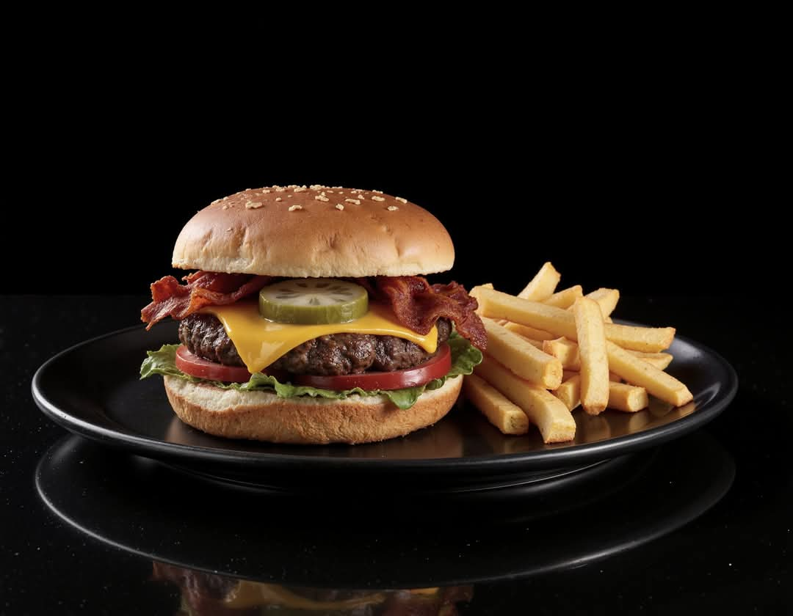
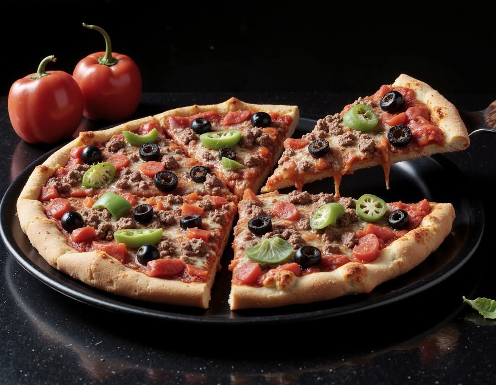
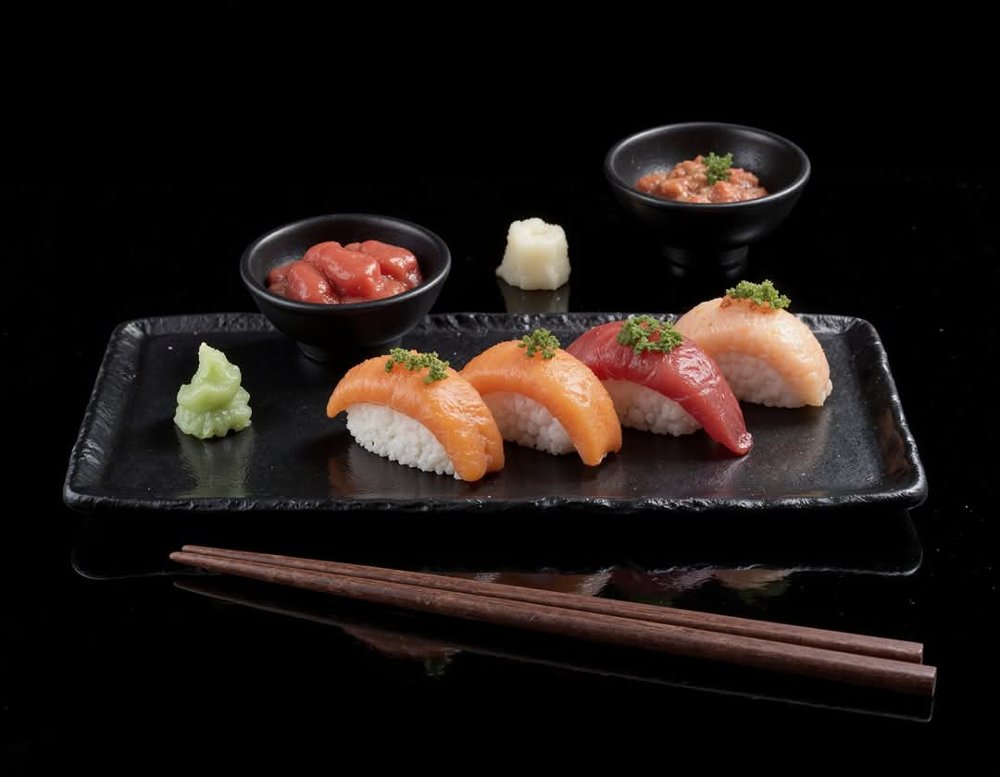
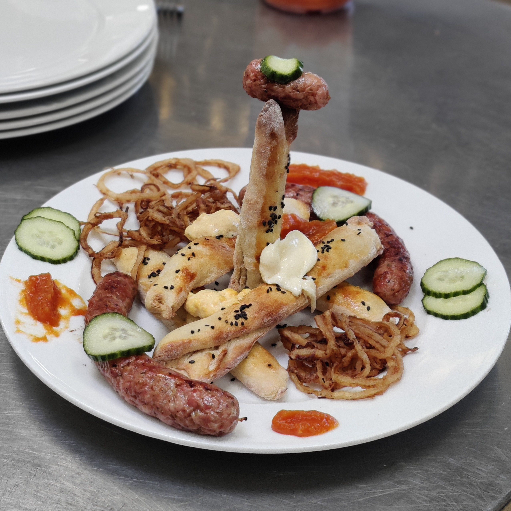
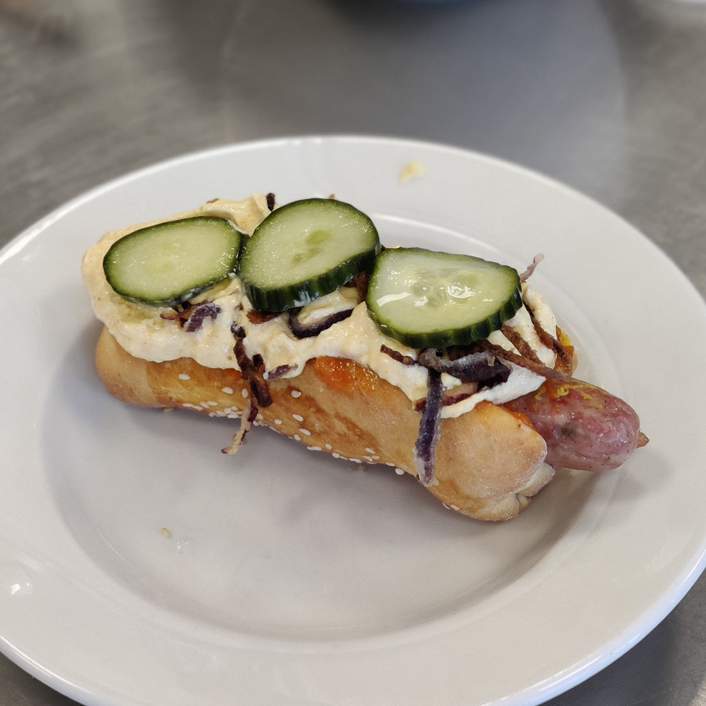
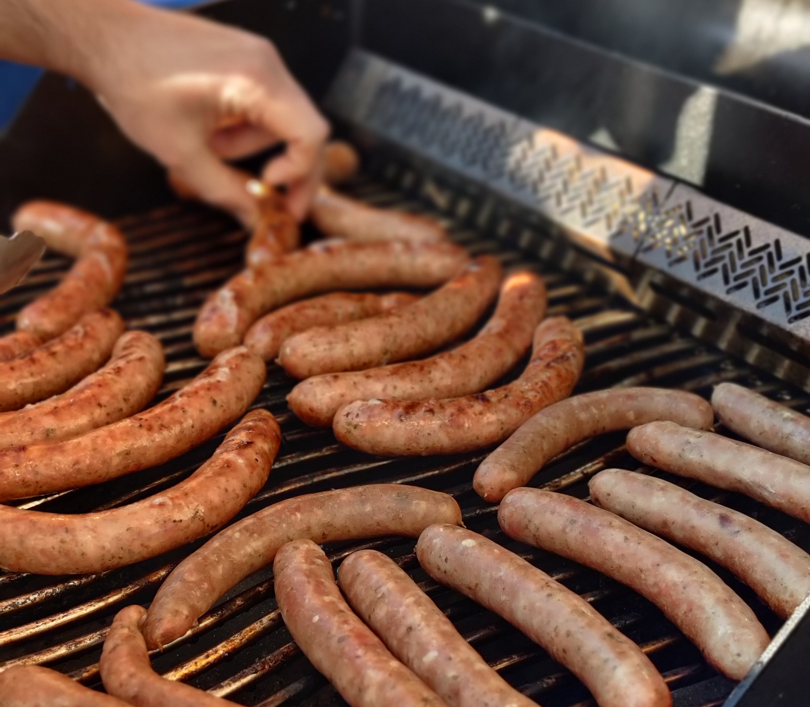

Welcome to Food Collage
Discover a variety of pictures of students in the process of making food
Food Pictures
Here are some of our favorite food pictures:
- 
- 
- 
- 
- 
- 
Food construction
This section explores how food is made, showcasing behind-the-scenes imagery.
Instruktion
Her bliver vi instruktionerer i hvad vi skal lave
Som er hotdogs
Delt i grupper
Her bliver vi delt i grupper, hvor der er nogen fra hvert hold
Så 2 fra web og 2 fra medie
Instrukteret i at lave pølser
Her har vi nogle elever, som bliver instrukteret i at lave polske pølser
Diskussion af opskrift
Her diskuterer vi opskriften og opdeler opskrifterne mellem os.
Krydderier til madlavning
Her kan vi se forskellige krydderier, der bruges i madlavning.
Vi bruger dem til at forbedre smagen af vores retter.
Her har vi nogle flere ingredienser
Her præsenterer vi flere ingredienser, der kan bruges i madlavningen.
Disse ingredienser giver retten dybde og kompleksitet.
To mænd tjekker opskriften
Her kan vi se to mænd, der tjekker deres opskrift for at se, om de gør det rigtigt.
To mænd
Her kan vi se, hvordan to mænd arbejder sammen i køkkenet.
En lærer og elev
Her har vi en lærer og en elev, der samarbejder om en opskrift.
Ung mand
Her har vi en glad ung mand der er i gang med hans opskrift
To unge piger
Her ser vi to unge piger som er igang med en opskrift
To unge mænd
Her ser vi to unge mænd som er i gang med opskriften
Nogle ingredienser
Her har vi nogle ingredienser, der bliver benyttet.
Fuld i gang med madlavning
Her har vi hele køkkenet fuld i gang med at lave mad.
Pølsebrød
Her har vi nogle færdigbagte pølsebrød.
Pølser og brød
Her er nogle pølser, som lige er blevet færdig med at blive røget, sammen med nogle færdigbagte brød.
En gruppe elever
En gruppe elever, som venter på at deres pølser bliver færdige ude på grillen. De er meget sultne.
Pølselavning
Her er vi i gang med nogle elever, som skal lave disse polske pølser fra bunden af.
Pølser grillet
Fine polske pølser på grillen.
Elever ude ved grillen
Her har vi en flok elever, som er ude ved grillen for at stege nogle polske pølser.
Der er også nogle elever, der var i gang med at røge nogle pølser.
En sjov hotdog figur
Her har vi en sjov hotdog figur.
En sjov hotdog figur med den skønneste smag!
Færdig lavet hotdog
En lækker velsmagende hotdog
med en polsk pølse og hjemmelavet ketchup, sennep og mayonnaise, med ristede løg og syltede agurk.
Food recipes
Here is a collection of delicious recipes that you can try at home, complete with ingredients.
Recipe 1: Pølser
Råvarer:
4,5 kg. Svinebov (8 mm)
0,5 kg. isvand
Tørvarer:
0,050 kg. Kogesalt
0,040 kg. Nitritsalt
0,015 kg. Fosfat
0,025 kg. Brun farin
0,006 kg. Sort peber
0,006 kg. Hvid peber
0,008 kg. Merian
0,015 kg. Hvidløg
0,010 kg. sennepskorn
1. Hak svinebov på 8 mm hulskive og snitter på 5 mm hulskive, og rør det godt med salt, nitritsalt og fosfat.
2. Tilsæt de resterende tørstoffer og vand, og håndålt farsen til god binding og ensartethed.
3. Farsen stoppes i ringe på ca. 350 gram, i svinesmaltarm kal. 34/36
4. De stoppede pølser ålerøges ved 90° til en kernetemperatur på 75°
5. Afkøles i vandbad i 20 min. Og køle-tører herefter til en kernetemp. under 10° på max 4 timer
Recipe 2: Brød
Ingredienser:
25 g gær
3 dl mælkmælk
50 g smør
2 spsk sukker
1/2 tsk salt
1 æg
450-500-500 g hvedemel
Fremgangsmåde
1. Lun mælken og smelt smørret (eventuelt i samme gryde eller skål hvis du bruger mikroovn)
2. Køl mælk og smør lidt ned det skal være fingervarmt.
3. Hæld mælk og smør i en skål og smuldr gæren heri.
4. Tilsæt sukker, salt og æg og rør godt rundt.
5. Tilsæt melet lidt af gangen, og brug gerne en røremaskine til at røre dejen. Den må gerne være en smule klistret når den er færdig.
6. Lad dejen hæve i tildækket i 1 time.
7. Når dejen har hævet hælder du den ud på bordet og ælter den hurtigt igennem.
8. Del dejen i 10 lige store dele.
9. Gør hver del dej flad og aflang og rul derefter dejen sammen til en pølse og luk den i enderne. Det gør at brødene bliver mere luftige.
10.Placer alle brødene på en bageplade med bagepapir.
11.Pensl med sammenpisket æg og drys eventuelt med sesamfrø.
12.Bag pølsebrødene i en forvarmet ovn ved 210 grader i cirka 10 minutter.
Recipe 3: Remoulade
Ingredienser:
3 spsk. mayonnaise
1 spsk. cremefraiche min. 18 %
1 spsk. finthakket kapers
1 spsk. finthakket gulerødder
1 spsk. finthakket cornichoner
1 spsk. finthakket purløg
1 spsk. finthakket estragon eller kørvel kan undlades
1 tsk. finthakket løg
1 spsk. citron
1 tsk. grov sennep
Salt/peber/sukker
Gurkemeje til at justere farven med
Sådan gør du
Hak hele svineriet, vær omhyggelig og hak det fint og pænt. Ellers så blander du hele molevitten sammen og smager til med salt, peber og lidt sukker. Hvis du vil have den gule farve så justerer du bare med gurkemeje.
Lad det trække ca. 30 min i køleskabet og så er du klar!
Recipe 4: Ketchup
Ingredienser:
400 g tomater
150 g blommetomater
1 æble, skrællet og skåret i tern
2 løg, finthakket
1 fed hvidløg, presset
50 g sukker
2 spsk. brun farin
1/2 dl eddike
1 knivspids nellike, stødt
1 tsk. salt
sort peber
Fremgangsmåde
Skær stilk og blomst af tomaterne.
Kom tomater og resten af ingredienserne i en gryde og kog det op. Lad det småkoge i en time under låg.
Lad det køle lidt af og blend det med en stavblender til det er helt fint.
Kom tomatketchuppen gennem en sigte tilbage i en ren gryde.
Kog ketchuppen til konsistensen er tyktflydende.
Køles derefter ned indtil brug.
Recipe 5: Sennep
Ingredienser:
3 dl gule sennepsfrø
2 dl sennepspulver
4,5 dl vand
4 dl æbleeddike
10 spsk. brun farin
2 tsk. salt
4 spsk. gurkemeje
Fremgangsmåde
Bland sennepsfrø og sennepspulver.
Kog vand, eddike, farin, salt og gurkemeje op i en lille gryde, og hæld det over senneppen. Lad det trække ved stuetemperatur i et døgn.
Kør det hele i en blender, til konsistensen er passende. Hold evt. igen på lidt af væden, eller tilsæt lidt mere eddike undervejs, hvis den virker for tyk.
Kom senneppen i et glas, og lad den gerne modne i køleskabet et par dage inden brug.
PS: Dette er en sennep, der giver luft i næsen!
Recipe 6: Ristede løg
Ingredienser:
3 løg,
5 dl. fritureolie
1/2 dl. hvedemel
2 spsk. flagesalt
Fremgangsmåde
Skær løgene ud i fine tynde skiver, skil alle løgringene fra hinanden og kom dem i en skål.
Drys med hvedemel og rør godt rundt, så det bliver godt fordelt. Kom løgene i en sigte og ryst det overskydende mel godt af.
Varm olien i en gryde (175 grader) kommer du en lille test løgring i, og kontrollere at olien er varm nok.
Derefter steges løgringene lidt af gangen til de er flotte og gyldne, men ikke sorte og brændte.
Tag de færdige løg op med en hulske. Dryp dem af på fedtsugende papir og drys med groft flagesalt.
De stegte løg opbevares i en lufttæt beholder og gemmes ved stue temperatur indtil brug.
Recipe 7: Syltede agurk
Denne syltelage er en basislage i kan bruge til mange forskellige grønsager, men selv også frugt kan syltes med denne lage.
Ingredienser:
1 del. Eddike
1 del. Vand
3/4 Sukker
1/2 salt
5 peberkorn
5 korianderfrø
1 laurbærblad
Fremgangsmåde:
Alle ingredienserne kommes i en gryde, og koges op til kogepunktet.
Når alt sukkeren er opløst smages lagen til og det sættes på køl.
Når lagen er let afkølet hældes det over de valgte grønsager/frugter
De skal være helt dækket af lagen.
Lad det hele sylte 1 time på køl, og det er klar til brug.
NB! Ved meget vandholdige grønsager eksempelvis agurker, er det meget vigtigt at få noget af vandet ud af varen inden syltning. Det kan man gøre ved at drysse sine agurkeskiver let med salt, og lade dem trække med saltet ca. 15 min. (saltet skylles af agurkerne inden de kommer i lagen)
NB! Ved meget hårde grønsager som rødbeder, skal de gerne koges møre inden de kommer i lagen!.
Recipe 8: Hvidløgsmayonnaise
Ingredienser:
2 stk. past. æggeblommer (stuetemp.)
½ tsk. salt
1/2 tsk sennep
1/2 tsk hvidvinseddike
1-2 dl olie, der ikke smager af for meget (fx rapsolie – også stuetemp.)
1-2 fed hvidløg (presset eller finthakket) Smages til med evt. Salt og lidt citron
Fremgangsmåde:
Pisk æggeblommerne seje med salt, tilsæt sennep og eddike. Tilsæt olien (dråbevis) lidt ad gangen, når det binder kan du forsætte med at hælde olie i, i en tynd stråle. ( jo mere olie jo tykkere bliver mayonnaisen) pisk indtil olien er optaget og den ønskede konsistens opnås. Synes du konsistensen pludselig bliver for tyk, kan du blande lidt vand eller eddike i.
Smag til med yderligere salt, citron eller eddike.
Tilsidst kommes hvidløg i ( husk hvidløg bliver stærkere i smagen, jo længere det får lov at trække)